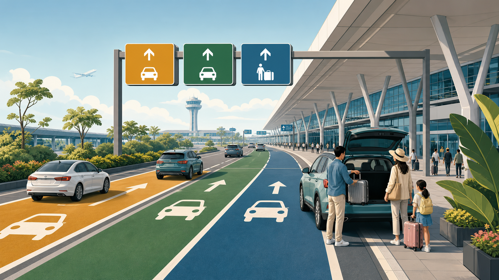

VSH CURRENT AFFAIRS · PHÂN TÍCH NGÀY 14/08/2026
Nội Bài phân luồng mới: 5 việc nên làm trước khi đón, trả khách tại T1 và T2
Đừng chỉ nhắn “đứng trước cửa ga”. Xác nhận đúng nhà ga, thống nhất điểm gặp và chuẩn bị phương thức thanh toán sẽ giúp cả hành khách lẫn tài xế bớt đi vòng, chờ sai chỗ hoặc lỡ việc.

Tin là gì?
Cảng Hàng không Quốc tế Nội Bài cho biết phương án tổ chức lại luồng hành khách và phương tiện tại khu vực nhà ga T1, T2 được áp dụng từ ngày 30/7/2026. Mục tiêu là ưu tiên phương tiện phục vụ hành khách, bố trí riêng xe nội bộ và hạn chế dừng, đỗ không đúng vị trí trước sảnh nhà ga.
Việc thay đổi không chỉ liên quan tài xế. Hành khách cũng cần xác định điểm gặp cụ thể hơn, bởi cách hẹn chung chung có thể khiến người đón và người được đón đứng ở hai luồng khác nhau.
Tin này có nghĩa là gì?
“Đúng sân bay” chưa đủ; cần đúng nhà ga, đúng tầng và đúng khu vực đón hoặc trả. T1 chủ yếu phục vụ chuyến bay nội địa, còn T2 phục vụ chuyến bay quốc tế, nhưng hành khách vẫn nên kiểm tra thông tin trên vé, ứng dụng hoặc thông báo của hãng thay vì suy đoán.
Phương án vận hành có thể được điều chỉnh theo lưu lượng thực tế. Vì vậy, bài viết này cung cấp nguyên tắc chuẩn bị, không thay thế sơ đồ, biển chỉ dẫn hoặc hướng dẫn của lực lượng điều tiết tại sân bay.
Vì sao thay đổi này đáng chú ý?
Một điểm gặp không rõ ràng có thể làm tăng thời gian chờ, chi phí đi vòng, dòng xe dừng trước sảnh và nguy cơ hành khách chậm làm thủ tục. Ngược lại, tách xe nội bộ khỏi luồng phục vụ hành khách và giảm dừng chờ sai vị trí có thể giúp khu vực nhà ga thông thoáng, an toàn và dễ sử dụng hơn.
Ở quy mô lớn, một thay đổi nhỏ trong cách mỗi gia đình hẹn đón có thể giảm ùn ứ cục bộ cho hàng nghìn lượt phương tiện.
Checklist 5 bước trước khi đến Nội Bài
- Xác nhận nhà ga: kiểm tra T1 hay T2 trên vé, ứng dụng hoặc thông báo của hãng hàng không.
- Chia sẻ thông tin chuyến bay: gửi mã chuyến và giờ đến dự kiến để người đón theo dõi thay vì đến quá sớm rồi dừng chờ.
- Chỉ chốt điểm gặp sau khi có thông tin thực tế: sau khi lấy hành lý, hành khách báo tầng, cửa hoặc cột theo biển chỉ dẫn đang áp dụng.
- Không dừng chờ lâu ở làn sát sảnh: nếu hành khách chưa ra, tài xế đi theo hướng dẫn tới khu vực chờ hoặc quay lại, tránh gây cản trở dòng xe.
- Kiểm tra thanh toán: xe có ETC nên bảo đảm thẻ hoạt động, tài khoản đủ tiền và biển số sạch, rõ. Nội Bài cũng công bố các phương thức thanh toán khác tại làn hỗn hợp.
Giảm tốc độ, quan sát biển chỉ dẫn, không chuyển làn đột ngột và hỏi nhân viên điều tiết. Hướng dẫn tại hiện trường luôn được ưu tiên hơn ảnh chụp hoặc thông tin cũ trên mạng.
Điều cần theo dõi tiếp
Người đi sân bay nên kiểm tra thông báo mới nhất của Nội Bài và hãng hàng không trước ngày khởi hành. Nếu sân bay công bố sơ đồ hoặc thay đổi điểm đón, trả cụ thể, VSH sẽ cập nhật bài thay vì giữ hướng dẫn đã lỗi thời.
Nguồn, phương pháp và giới hạn
Cảng HKQT Nội Bài — phương án phân luồng T1, T2; Cảng HKQT Nội Bài — thanh toán và ETC; VnExpress — nguồn phát hiện nhu cầu hướng dẫn. Truy cập ngày 14/08/2026.
VSH tự tổng hợp từ hồ sơ nguồn và không sao chép sơ đồ, hình ảnh hoặc cách trình bày của báo chí. Bài không phải chỉ dẫn giao thông chính thức; điều kiện khai thác tại chỗ có thể thay đổi.